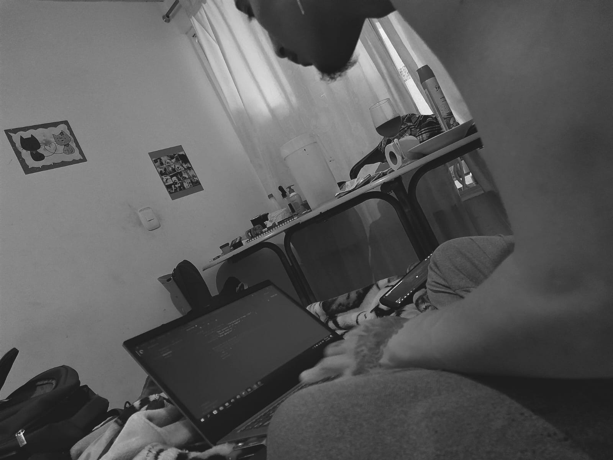

Responsabilidad principal: Me contrataron para Monitorear el sistema de seguridad de información y comunicaciones para asegurar el cumplimiento de estándares y modelos establecidos.Conocimiento de comandos de Linux que te permitió resolver desafíos técnicos de manera efectiva y eficiente.
También mantenías la infraestructura tecnológica y de redes siguiendo procedimientos y modelos de referencia.
Configuración de dispositivos informáticos según especificaciones de diseño y protocolos técnicos
Mi trayectoria esta empresa: Brasileña en atención al cliente, donde rápidamente me destaqué por mi habilidad para resolver problemas y superar expectativas, brindando un servicio excepcional a los clientes de la línea Claro.
planteamiento y análisis de soluciones a Empresas como: Oracle España ,lenovo Argentina y Microsoft, y Marketing Personal, encargándome de gestionar el servicio técnico especializado.
IBM
En esta empresa, En esta empresa, tras ser escalado desde Algar-tech, tuve la valiosa oportunidad de colaborar en diversos proyectos, simplificando la comunicación entre el cliente y el equipo de trabajo. Mi enfoque analítico y mis habilidades para resolver problemas técnicos fueron fundamentales para potenciar la experiencia del cliente y el rendimiento de algunas colaboraciones.
Marketing Personal
Labore con estructuras de Datos en la mesa de sevicio de marketing personal administrando los credenciales
de nuevos colaboradores haciendo inventario con las especificaciones especificas de estos aliados.
Liberty-Puerto Rico
Durante mi tiempo en la empresa tuve el beneficiode desempeñarme como Agente de nivel 3, siendo el punto de contacto directo para atender y resolver las necesidades de los clientes a través de llamadas telefónicas.
Cursos
De Interes
Instituto Norte La Estrella Bachillerato Académico
● Técnico en seguridad informática (Análisis de riesgos)
● Prácticas de ofimática
● Sena C.R.N.R. La Salada La Estrella Técnica Sistemas .

Puede ser de tu interes
Registrar información de acuerdo con normativa y procedimiento técnico. Elaborar informe técnico de mantenimiento y/o reparación según procedimientos y protocolo de servicio. Atender requerimientos de los usuarios de acuerdo con procedimientos técnicos y normativa vigente. Instruir en el uso de herramientas informáticas de acuerdo con las necesidades de manejo de información. Manejar herramientas informáticas de acuerdo con necesidades de información y manuales técnicos. Instalar y ensamblar equipos de cómputo según manual y especificaciones técnicas. Mantener y reparar equipos de cómputo según procedimiento técnico.